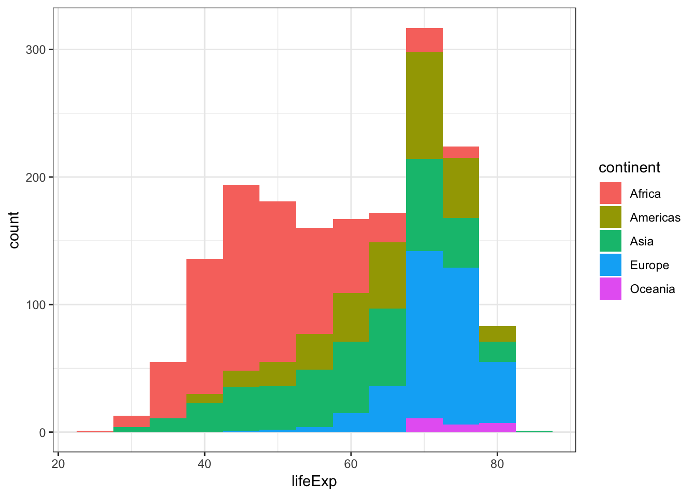
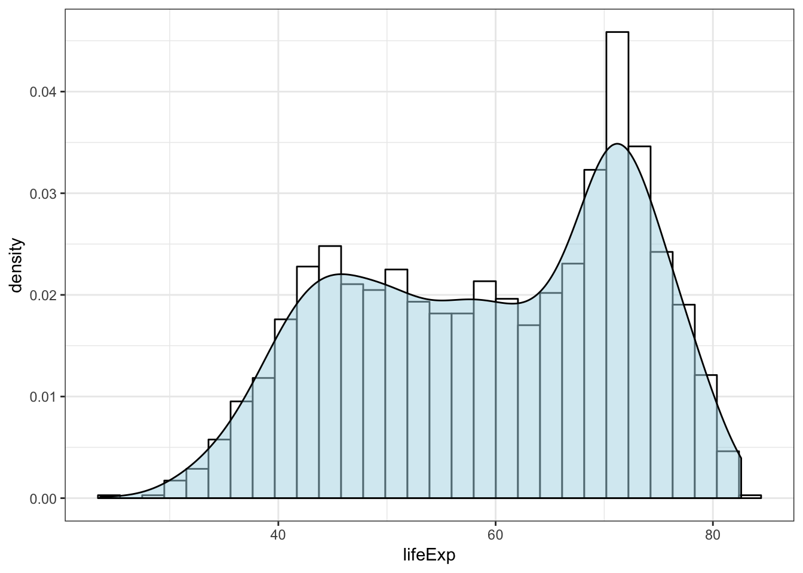
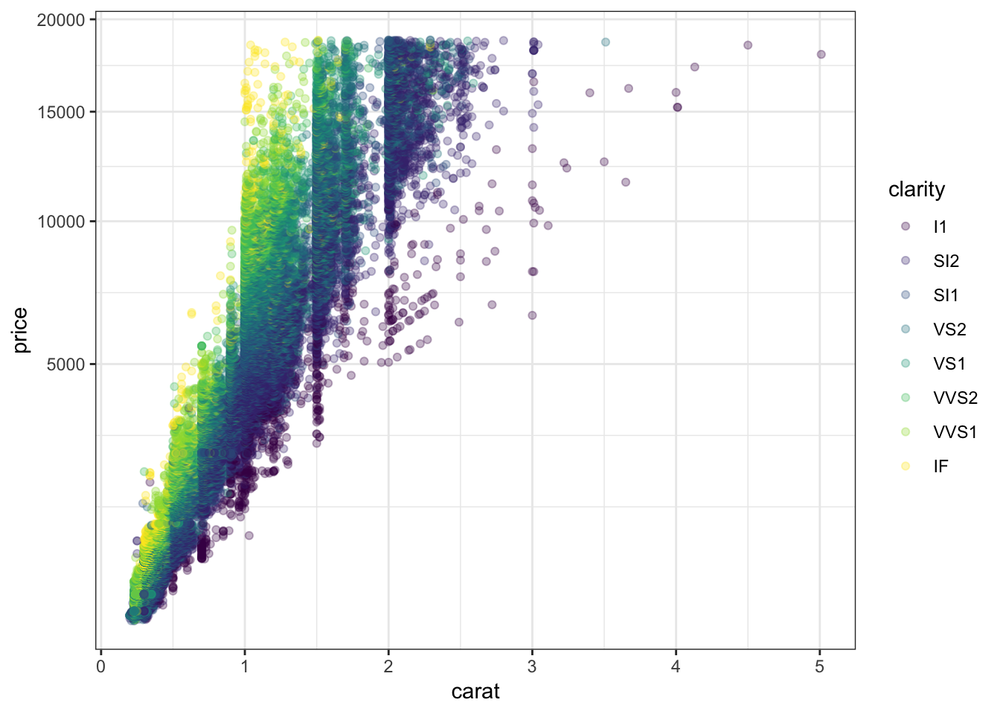
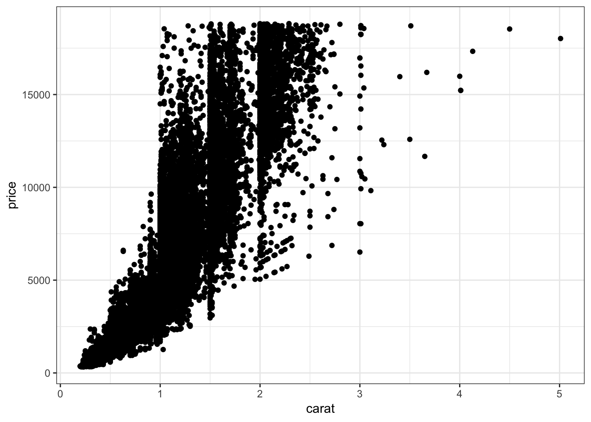

15 A Grammar of Graphics
15.1 Rationale
A grammar for communicating data visualization:
- Data: the data set we are plotting
- Aesthetics: the variation or relationships in the data we want to visualize
- Geometries: the geometric object by which we render the aesthetics
- Coordinates: the coordinate system used (not covered here)
- Facets: the layout of plots required to visualize the data
- Other Options: any other customizations we wish to make, such as changing the color scheme or labels
These are strung together like words in a sentence.
15.2 Package ggplot2
The R package ggplot2 implements a grammar of graphics along these lines. First, let’s load ggplot2:
> library(ggplot2)Now let’s set a theme (more on this later):
> theme_set(theme_bw())15.3 Pieces of the Grammar
ggplot()aes()geom_*()facet_*()scale_*()theme()labs()
The * is a placeholder for a variety of terms that we will consider.
15.4 Geometries
Perhaps the most important aspect of ggplot2 is to understand the “geoms”. We will cover the following:
geom_bar()geom_boxplot()geom_violin()geom_histogram()geom_density()geom_line()geom_point()geom_smooth()geom_hex()
15.5 Call Format
The most basic ggplot2 plot is made with something like:
ggplot(data = <DATA FRAME>) +
geom_*(mapping = aes(x = <VAR X>, y = <VAR Y>))where <DATA FRAME> is a data frame and <VAR X> and <VAR Y> are variables (i.e., columns) from this data frame. Recall geom_* is a placeholder for a geometry such as geom_boxplot.
15.6 Layers
There’s a complex “layers” construct occurring in the ggplot2 package. However, for our purposes, it suffices to note that the different parts of the plots are layered together through the + operator:
> ggplot(data = mpg) +
+ geom_point(mapping = aes(x = displ, y = hwy, color=drv)) +
+ geom_smooth(mapping = aes(x = displ, y = hwy, color=drv)) +
+ scale_color_brewer(palette = "Set1", name = "Drivetrain") +
+ labs(title = "Highway MPG By Drivetrain and Displacement",
+ x = "Displacement", y = "Highway MPG")15.7 Placement of the aes() Call
In the previous slide, we saw that the same aes() call was made for two geom’s. When this is the case, we may more simply call aes() from within ggplot():
> ggplot(data = mpg, mapping = aes(x = displ, y = hwy, color=drv)) +
+ geom_point() +
+ geom_smooth() +
+ scale_color_brewer(palette = "Set1", name = "Drivetrain") +
+ labs(title = "Highway MPG By Drivetrain and Displacement",
+ x = "Displacement", y = "Highway MPG")There may be cases where different geom’s are layered and require different aes() calls. This is something to keep in mind as we go through the specifics of the ggplot2 package.
15.8 Original Publications
Wickham, H. (2010) A Layered Grammar of Graphics. Journal of Computational and Graphical Statistics, 19 (1): 3–28.
This paper designs an implementation of The Grammar of Graphics by Leland Wilkinson (published in 2005).
15.9 Documentation
- In R:
help(package="ggplot2") - http://docs.ggplot2.org/current/
- http://www.cookbook-r.com/Graphs/
- ggplot2: Elegant Graphics for Data Analysis (somewhat outdated, but gives clear rationale)
15.10 Barplots
The geom_bar() layer forms a barplot and only requires an x assignment in the aes() call:
> ggplot(data = diamonds) +
+ geom_bar(mapping = aes(x = cut))Color in the bars by assigning fill in geom_bar(), but outside of aes():
> ggplot(data = diamonds) +
+ geom_bar(mapping = aes(x = cut), fill = "tomato")Color within the bars according to a variable by assigning fill in geom_bar() inside of aes():
> ggplot(data = diamonds) +
+ geom_bar(mapping = aes(x = cut, fill = cut))When we use fill = clarity within aes(), we see that it shows the proportion of each clarity value within each cut value:
> ggplot(data = diamonds) +
+ geom_bar(mapping = aes(x = cut, fill = clarity))By setting position = "dodge" outside of aes(), it shows bar charts for the clarity values within each cut value:
> ggplot(data = diamonds) +
+ geom_bar(mapping= aes(x = cut, fill = clarity),
+ position = "dodge")By setting position = "fill", it shows the proportion of clarity values within each cut value and no longer shows the cut values:
> ggplot(data = diamonds) +
+ geom_bar(mapping=aes(x = cut, fill = clarity),
+ position = "fill") +
+ labs(x = "cut", y = "relative proporition within cut")15.11 Boxplots and Violin Plots
The geom_boxplot() layer forms a boxplot and requires both x and y assignments in the aes() call, even when plotting a single boxplot:
> ggplot(data = mpg) +
+ geom_boxplot(mapping = aes(x = 1, y = hwy))Color in the boxes by assigning fill in geom_boxplot(), but outside of aes():
> ggplot(data = mpg) +
+ geom_boxplot(mapping = aes(x = 1, y = hwy),
+ fill="lightblue") +
+ labs(x=NULL)Show a boxplot for the y values occurring within each x factor level by making these assignments in aes():
> ggplot(data = mpg) +
+ geom_boxplot(mapping = aes(x = factor(cyl), y = hwy))By assigning the fill argument within aes(), we can color each boxplot according to the x-axis factor variable:
> ggplot(data = mpg) +
+ geom_boxplot(mapping = aes(x = factor(cyl), y = hwy,
+ fill = factor(cyl)))The geom_jitter() function plots the data points and randomly jitters them so we can better see all of the points:
> ggplot(data = mpg, mapping = aes(x=factor(cyl), y=hwy)) +
+ geom_boxplot(fill = "lightblue") +
+ geom_jitter(width = 0.2)
A violin plot, called via geom_violin(), is similar to a boxplot, except shows a density plot turned on its side and reflected across its vertical axis:
> ggplot(data = mpg) +
+ geom_violin(mapping = aes(x = drv, y = hwy))
Add a geom_jitter() to see how the original data points relate to the violin plots:
> ggplot(data = mpg, mapping = aes(x = drv, y = hwy)) +
+ geom_violin(adjust=1.2) +
+ geom_jitter(width=0.2, alpha=0.5)Boxplot example on the gapminder data:
> ggplot(gapminder, aes(x = continent, y = lifeExp)) +
+ geom_boxplot(outlier.colour = "red") +
+ geom_jitter(width = 0.1, alpha = 0.25)Analogous violin plot example on the gapminder data:
> ggplot(gapminder, aes(x = continent, y = lifeExp)) +
+ geom_violin() +
+ geom_jitter(width = 0.1, alpha = 0.25)15.12 Histograms and Density Plots
We can create a histogram using the geom_histogram() layer, which requires an x argument only in the aes() call:
> ggplot(gapminder) +
+ geom_histogram(mapping = aes(x=lifeExp))We can change the bin width directly in the histogram, which is an intuitive parameter to change based on visual inspection:
> ggplot(gapminder) +
+ geom_histogram(mapping = aes(x=lifeExp), binwidth=5)The bins are sometimes centered in an unexpected manner in ggplot2:
> ggplot(diamonds) +
+ geom_histogram(mapping = aes(x=price), binwidth = 1000)Let’s fix how the bins are centered (make center half of binwidth).
> ggplot(diamonds) +
+ geom_histogram(mapping = aes(x=price), binwidth = 1000,
+ center=500)Instead of counts on the y-axis, we may instead want the area of the bars to sum to 1, like a probability density:
> ggplot(gapminder) +
+ geom_histogram(mapping = aes(x=lifeExp, y=..density..),
+ binwidth=5)
When we use fill = continent within aes(), we see that it shows the counts of each continent value within each lifeExp bin:
> ggplot(gapminder) +
+ geom_histogram(mapping = aes(x=lifeExp, fill = continent),
+ binwidth = 5)
Display a density plot using the geom_density() layer:
> ggplot(gapminder) +
+ geom_density(mapping = aes(x=lifeExp))Employ the arguments color="blue" and fill="lightblue" outside of the aes() call to include some colors:
> ggplot(gapminder) +
+ geom_density(mapping = aes(x=lifeExp), color="blue",
+ fill="lightblue")By utilizing color=as.factor(year) we plot a density of lifeExp stratified by each year value:
> ggplot(gapminder) +
+ geom_density(aes(x=lifeExp, color=as.factor(year)),
+ size=1.2)Overlay a density plot and a histogram together:
> ggplot(gapminder, mapping = aes(x=lifeExp)) +
+ geom_histogram(aes(y=..density..), color="black",
+ fill="white") +
+ geom_density(fill="lightblue", alpha=.5)
15.13 Line Plots
babynames Revisited
Let’s first create a data frame that captures the number of times “John” is registered in males per year:
> library("babynames")
> john <- babynames %>% filter(sex=="M", name=="John")
> head(john)
# A tibble: 6 x 5
year sex name n prop
<dbl> <chr> <chr> <int> <dbl>
1 1880 M John 9655 0.0815
2 1881 M John 8769 0.0810
3 1882 M John 9557 0.0783
4 1883 M John 8894 0.0791
5 1884 M John 9388 0.0765
6 1885 M John 8756 0.0755We can geom_lines() to plot a line showing the popularity of “John” over time:
> ggplot(data = john) +
+ geom_line(mapping = aes(x=year, y=prop), size=1.5)Now let’s look at a name that occurs nontrivially in males and females:
> kelly <- babynames %>% filter(name=="Kelly")
> ggplot(data = kelly) +
+ geom_line(mapping = aes(x=year, y=prop, color=sex),
+ size=1.5)15.14 Scatterplots
The layer geom_point() produces a scatterplot, and the aes() call requires x and y assignment:
> ggplot(data = mpg) +
+ geom_point(mapping = aes(x = displ, y = hwy))Give the points a color:
> ggplot(data = mpg) +
+ geom_point(mapping = aes(x = displ, y = hwy),
+ color = "blue")Color the points according to a factor variable by including color = class within the aes() call:
> ggplot(data = mpg) +
+ geom_point(mapping = aes(x = displ, y = hwy,
+ color = class))Increase the size of points with size=2 outside of the aes() call:
> ggplot(data = mpg) +
+ geom_point(mapping = aes(x = displ, y = hwy,
+ color = class), size=2)Vary the size of the points according to the pop variable:
> gapminder %>% filter(year==2007) %>% ggplot() +
+ geom_point(aes(x = log(gdpPercap), y = lifeExp,
+ size = pop))
Vary the transparency of the points according to the class factor variable by setting alpha=class within the aes() call:
> ggplot(data = mpg) +
+ geom_point(mapping = aes(x = displ, y = hwy,
+ alpha = class))
Warning: Using alpha for a discrete variable is not advised.Vary the shape of the points according to the class factor variable by setting alpha=class within the aes() call (maximum 6 possible shapes – oops!):
> ggplot(data = mpg) +
+ geom_point(mapping = aes(x = displ, y = hwy,
+ shape = class))Color the points according to the cut variable by setting color=cut within the aes() call:
> ggplot(data = diamonds) +
+ geom_point(mapping = aes(x=carat, y=price, color=cut),
+ alpha=0.7)Color the points according to the clarity variable by setting color=clarity within the aes() call:
> ggplot(data = diamonds) +
+ geom_point(mapping=aes(x=carat, y=price, color=clarity),
+ alpha=0.3)
Override the alpha=0.3 in the legend:
> ggplot(data=diamonds) +
+ geom_point(mapping=aes(x=carat, y=price, color=clarity),
+ alpha=0.3) +
+ guides(color=guide_legend(override.aes = list(alpha = 1)))15.15 Axis Scales
A different way to take the log of gdpPercap:
> gapminder %>% filter(year==2007) %>% ggplot() +
+ geom_point(aes(x = gdpPercap, y = lifeExp,
+ size = pop)) +
+ scale_x_log10()The price variable seems to be significantly right-skewed:
> ggplot(diamonds) +
+ geom_boxplot(aes(x=color, y=price)) We can try to reduce this skewness by rescaling the variables. We first try to take the log(base=10) of the price variable via scale_y_log10():
> ggplot(diamonds) +
+ geom_boxplot(aes(x=color, y=price)) +
+ scale_y_log10()Let’s repeat this on the analogous violing plots:
> ggplot(diamonds) +
+ geom_violin(aes(x=color, y=price)) +
+ scale_y_log10()The relationship between carat and price is nonlinear. Let’s explore different transformations to find an approximately linear relationship.
> ggplot(data = diamonds) +
+ geom_point(mapping=aes(x=carat, y=price, color=clarity),
+ alpha=0.3)First try to take the squareroot of the the price variable:
> ggplot(data = diamonds) +
+ geom_point(aes(x=carat, y=price, color=clarity),
+ alpha=0.3) +
+ scale_y_sqrt()
Now let’s try to take log(base=10) on both the carat and price variables:
> ggplot(data = diamonds) +
+ geom_point(aes(x=carat, y=price, color=clarity), alpha=0.3) +
+ scale_y_log10(breaks=c(1000,5000,10000)) +
+ scale_x_log10(breaks=1:5)
Forming a violin plot of price stratified by clarity and transforming the price variable yields an interesting relationship in this data set:
> ggplot(diamonds) +
+ geom_violin(aes(x=clarity, y=price, fill=clarity),
+ adjust=1.5) +
+ scale_y_log10()15.16 Scatterplot Smoothers
Fitting “Smoothers” and Other Models to Scatterplots
- Later this semester, we will spend several weeks learning how to explain or predict an outcome variable in terms of predictor variables
- We will briefly show here how to plot some simple model fits to scatterplots
- You may want to return to these slides later in the semester once we cover modeling in more detail
Recall the scatterplot showing the relationship between highway mpg and displacement. How can we plot a smoothed relationship between these two variables?
> ggplot(data = mpg) +
+ geom_point(mapping = aes(x = displ, y = hwy))
Plot a smoother with geom_smooth() using the default settings (other than removing the error bands):
> ggplot(data = mpg, mapping = aes(x = displ, y = hwy)) +
+ geom_point() +
+ geom_smooth(se=FALSE)The default smoother here is a “loess” smoother. Let’s compare that to the least squares regresson line:
> ggplot(data = mpg, mapping = aes(x = displ, y = hwy)) +
+ geom_point() +
+ geom_smooth(aes(colour = "loess"), method = "loess", se = FALSE) +
+ geom_smooth(aes(colour = "lm"), method = "lm", se = FALSE)Now let’s plot a smoother to the points stratified by the drv variable:
> ggplot(data=mpg, mapping = aes(x = displ, y = hwy,
+ linetype = drv)) +
+ geom_point() +
+ geom_smooth(se=FALSE)Instead of different line types, let’s instead differentiate them by line color:
> ggplot(data = mpg, mapping = aes(x = displ, y = hwy,
+ color=drv)) +
+ geom_point() +
+ geom_smooth(se=FALSE)15.17 Overplotting
Definition
- Overplotting occurs when there are many observations, resulting in many objects being plotted on top of each other
- For example, the
diamondsdata set has 53940 observations per variable - Let’s explore some ways to deal with overplotting
Here is an example of an overplotted scatterplot:
> ggplot(data = diamonds, mapping = aes(x=carat, y=price)) +
+ geom_point()
Let’s reduce the alpha of the points:
> ggplot(data = diamonds, mapping = aes(x=carat, y=price)) +
+ geom_point(alpha=0.1)Let’s further reduce the alpha:
> ggplot(data = diamonds, mapping = aes(x=carat, y=price)) +
+ geom_point(alpha=0.01)We can bin the points into hexagons, and report how many points fall within each bin. We use the geom_hex() layer to do this:
> ggplot(data = diamonds, mapping = aes(x=carat, y=price)) +
+ geom_hex()Let’s try to improve the color scheme:
> ggplot(data = diamonds, mapping = aes(x=carat, y=price)) +
+ geom_hex() +
+ scale_fill_gradient2(low="lightblue", mid="purple", high="black",
+ midpoint=3000)We can combine the scale transformation used earlier with the “hexbin” plotting method:
> ggplot(data = diamonds, mapping = aes(x=carat, y=price)) +
+ geom_hex(bins=20) +
+ scale_x_log10(breaks=1:5) + scale_y_log10(breaks=c(1000,5000,10000)) 15.18 Labels and Legends
Here’s how you can change the axis labels and give the plot a title:
> ggplot(data = mpg) +
+ geom_boxplot(mapping = aes(x = factor(cyl), y = hwy)) +
+ labs(title="Highway MPG by Cylinders",x="Cylinders",
+ y="Highway MPG")You can remove the legend to a plot by the following:
> ggplot(data = diamonds) +
+ geom_bar(mapping = aes(x = cut, fill = cut)) +
+ theme(legend.position="none")The legend can be placed on the “top”, “bottom”, “left”, or “right”:
> ggplot(data = diamonds) +
+ geom_bar(mapping = aes(x = cut, fill = cut)) +
+ theme(legend.position="bottom")The legend can be moved inside the plot itself:
> ggplot(data = diamonds) +
+ geom_bar(mapping = aes(x = cut, fill = cut)) +
+ theme(legend.position=c(0.15,0.75))Change the name of the legend:
> ggplot(data = diamonds) +
+ geom_bar(mapping = aes(x = cut, fill = cut)) +
+ scale_fill_discrete(name="Diamond\nCut")Change the labels within the legend:
> ggplot(data = diamonds) +
+ geom_bar(mapping = aes(x = cut, fill = cut)) +
+ scale_fill_discrete(labels=c("F", "G", "VG", "P", "I"))15.19 Facets
Here is the histogram of the displ variable from the mpg data set:
> ggplot(mpg) + geom_histogram(mapping=aes(x=displ),
+ binwidth=0.25)The facet_wrap() layer allows us to stratify the displ variable according to cyl, and show the histograms for the strata in an organized fashion:
> ggplot(mpg) +
+ geom_histogram(mapping=aes(x=displ), binwidth=0.25) +
+ facet_wrap(~ cyl)Here is facet_wrap() applied to displ startified by the drv variable:
> ggplot(mpg) +
+ geom_histogram(mapping=aes(x=displ), binwidth=0.25) +
+ facet_wrap(~ drv)We can stratify by two variable simultaneously by using the facet_grid() layer:
> ggplot(mpg) +
+ geom_histogram(mapping=aes(x=displ), binwidth=0.25) +
+ facet_grid(drv ~ cyl)Let’s carry out a similar faceting on the diamonds data over the next four plots:
> ggplot(diamonds) +
+ geom_histogram(mapping=aes(x=price), binwidth=500)Stratify price by clarity:
> ggplot(diamonds) +
+ geom_histogram(mapping=aes(x=price), binwidth=500) +
+ facet_wrap(~ clarity)
Stratify price by clarity, but allow each y-axis range to be different by including the scale="free_y" argument:
> ggplot(diamonds) +
+ geom_histogram(mapping=aes(x=price), binwidth=500) +
+ facet_wrap(~ clarity, scale="free_y")Jointly stratify price by cut and clarify:
> ggplot(diamonds) +
+ geom_histogram(mapping=aes(x=price), binwidth=500) +
+ facet_grid(cut ~ clarity) +
+ scale_x_continuous(breaks=9000)15.20 Colors
15.20.1 Finding Colors
- A list of named colors in R (e.g., “lightblue”)
- RColorBrewer package
- The Crayola crayon colors from the
bromanpackage – usebrocolors(set="crayons") - Color blind palette:
> cbPalette <- c("#999999", "#E69F00", "#56B4E9", "#009E73", "#F0E442", "#0072B2",
+ "#D55E00", "#CC79A7")15.20.2 Some Useful Layers
scale_fill_manual()scale_color_manual()scale_fill_gradient()scale_color_gradient()
Manually determine colors to fill the barplot using the color blind palette defined above, cbPalette:
> ggplot(data = diamonds) +
+ geom_bar(mapping = aes(x = cut, fill = cut)) +
+ scale_fill_manual(values=cbPalette)
Manually determine point colors using the color blind palette defined above, cbPalette:
> ggplot(data = mpg) +
+ geom_point(mapping = aes(x = displ, y = hwy, color = class), size=2) +
+ scale_color_manual(values=cbPalette)Fill the histogram bars using a color gradient by their counts, where we determine the endpoint colors:
> ggplot(data = mpg) +
+ geom_histogram(aes(x=hwy, fill=..count..)) +
+ scale_fill_gradient(low="blue", high="red")Color the points based on a gradient formed from the quantitative variable, displ, where we we determine the endpoint colors:
> ggplot(data = mpg) +
+ geom_point(aes(x=hwy, y=cty, color=displ), size=2) +
+ scale_color_gradient(low="blue", high="red")An example of using the palette “Set1” from the RColorBrewer package, included in ggplot2:
> ggplot(diamonds) +
+ geom_density(mapping = aes(x=price, color=clarity)) +
+ scale_color_brewer(palette = "Set1")Another example of using the palette “Set1” from the RColorBrewer package, included in ggplot2:
> ggplot(data = mpg) +
+ geom_point(mapping = aes(x = displ, y = hwy, color = class)) +
+ scale_color_brewer(palette = "Set1")The gapminder package comes with its own set of colors, country_colors.
> ggplot(subset(gapminder, continent != "Oceania"),
+ aes(x = year, y = lifeExp, group = country,
+ color = country)) +
+ geom_line(show.legend = FALSE) + facet_wrap(~ continent) +
+ scale_color_manual(values = country_colors)15.21 Saving Plots
15.21.1 Saving Plots as Variables
Pieces of the plots can be saved as variables, which is particular useful to explortatory data analysis. These all produce the same plot:
> ggplot(data = mpg, mapping = aes(x = displ, y = hwy, color=drv)) +
+ geom_point() +
+ geom_smooth(se=FALSE)> p <- ggplot(data = mpg, mapping = aes(x = displ, y = hwy, color=drv)) +
+ geom_point()
> p + geom_smooth(se=FALSE)> p <- ggplot(data = mpg, mapping = aes(x = displ, y = hwy, color=drv))
> p + geom_point() + geom_smooth(se=FALSE)Try it yourself!
15.21.2 Saving Plots to Files
Plots can be saved to many formats using the ggsave() function. Here are some examples:
> p <- ggplot(data = mpg, mapping = aes(x = displ, y = hwy, color=drv)) +
+ geom_point() +
+ geom_smooth(se=FALSE)
> ggsave(filename="my_plot.pdf", plot=p) # saves PDF file
> ggsave(filename="my_plot.png", plot=p) # saves PNG fileHere are the arguments that ggsave() takes:
> str(ggsave)
function (filename, plot = last_plot(), device = NULL, path = NULL,
scale = 1, width = NA, height = NA, units = c("in", "cm", "mm"),
dpi = 300, limitsize = TRUE, ...) 15.22 Dynamic Visualization
Tools to dynamically interact with data visualizations (and calculations) are becoming increasingly common and straightforward to implement. Here are several examples:
> p <- ggplot(gapminder) +
+ geom_point(aes(x=gdpPercap, y=lifeExp, size = pop,
+ color = continent, frame = year)) +
+ scale_x_log10()
> gganimate(p, "animation_ex1.gif", ani.height=400, ani.width=500)The resulting file can be viewed here: https://github.com/jdstorey/asdslectures/blob/master/docs/images/animation_ex1.gif
{kind=link}
> p <- ggplot(gapminder) +
+ geom_density(aes(x=lifeExp, color=as.factor(year),
+ frame=year),
+ size=1.2) +
+ scale_color_discrete(name="year")
> gganimate(p, "animation_ex2.gif", ani.height=400, ani.width=500)The resulting file can be viewed here: https://github.com/jdstorey/asdslectures/blob/master/docs/images/animation_ex2.gif
{kind=link}
> p <- ggplot(gapminder) +
+ geom_density(aes(x=lifeExp, color=as.factor(year),
+ frame=year, cumulative = TRUE),
+ size=1.2) +
+ scale_color_discrete(name="year")
> gganimate(p, "animation_ex3.gif", ani.height=400, ani.width=500)The resulting file can be viewed here: https://github.com/jdstorey/asdslectures/blob/master/docs/images/animation_ex3.gif
{kind=link}
15.23 Themes
15.23.1 Available Themes
See https://r4ds.had.co.nz/graphics-for-communication.html#themes for an explanation of the ggplot2 themes.
See also the ggthemes package for additional themes.
15.23.2 Setting a Theme
Globally:
> theme_set(theme_minimal())Locally:
> ggplot(data = diamonds) +
+ geom_bar(mapping = aes(x = cut)) +
+ theme_minimal()